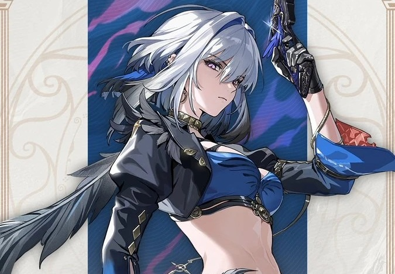
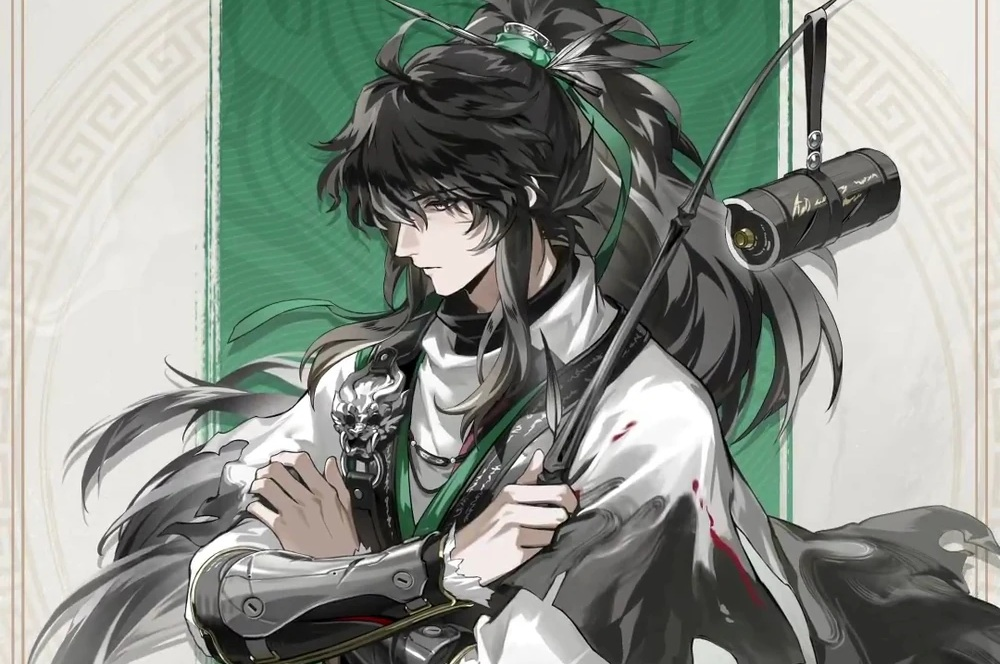
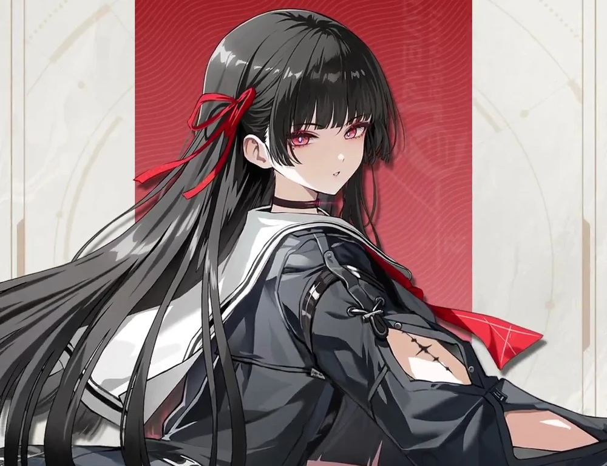
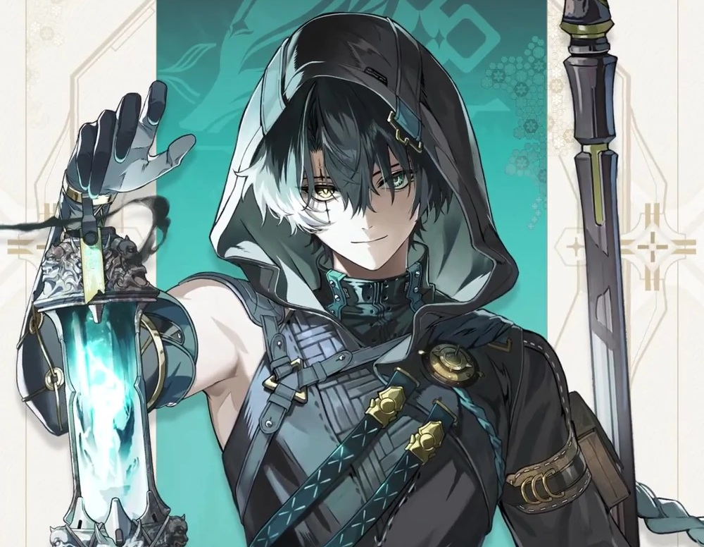
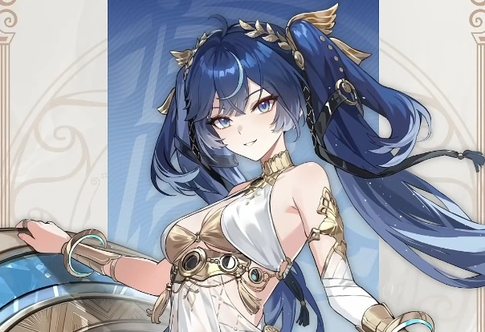
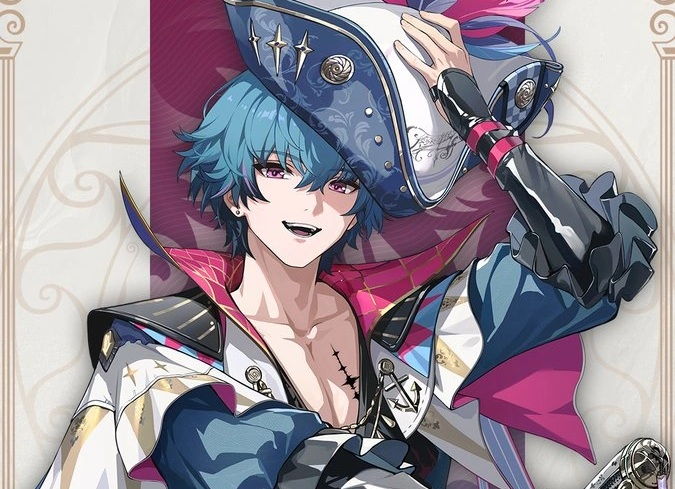
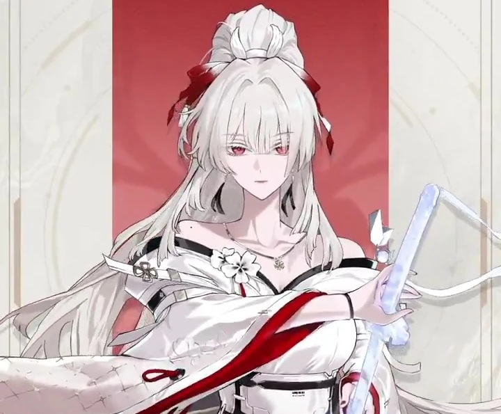
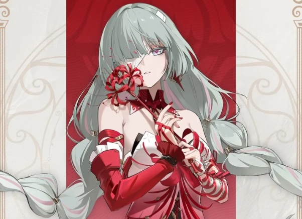
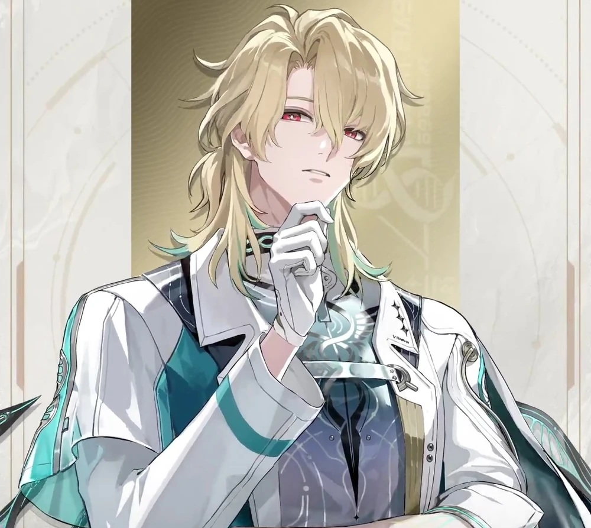

Main DPS
Source de dégat principale de l'équipe une fois que son énergie sinétique est chargée. De type fusion, scaling en crit.

Sub DPS / Charger
Source secondaire de dégat de l'équipe sert à charger l'énergie sinétique de Galbrena quand il attaque avec sa propre énergie. Type Aero, scaling en crit.

Shield / Healer
Chisa intervient en renfort pour poser un shield d'un tier des pv max, son ultime permetant également de soigner tous les membres de la team

Main PDS
Source principale des dégats de l'équipe, gameplay simple, scaling en PV, perte de 50% de sa vie lors de l'ultime. 50k minimum de type fusion

sub DPS / Healer
Personnage polyvalent complexe, peut servir de main DPS de sub DPS ou de healer, pretresse de lune autosufisante de type aero

buffer / healer
Charge son energie sinetique pour augmenter les degats de la team complete et soigner lors de son ultime, de type fusion

DPS
DPS de type glacio, qui ralentit le temps pour attaquer en piquée ultime aléatoire en fonction du combo.

DPS passif
DPS de type havoc, remplir sa jauge d'energie sinetique grâce à des competences résonatrice, puis déclancher son ultime et switch, elle infligera des degats de façon passive.

DPS
DPS de type spectro necessitant de nombreux combo pour faire des dégats sur la durée.